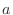
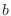
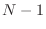
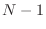

Next: Optimization of the objective Up: Dynamic programming for sequence Previous: Similarity versus distance scores Contents Index
In the discussion of the previous section, we have assumed that the
sequences or structures would be compared in a pairwise manner.
However, such pairwise comparisons of several related proteins may not
be self consistent, ie the following transitivity rule can be
broken: If residue  from protein is equivalent to residue 
in protein which in turn is equivalent to residue  in protein
then the residue from protein must also be equivalent to
residue
in protein
then the residue from protein must also be equivalent to
residue  from protein . This property is not always attained in
the set of usual pairwise comparisons relating a group of similar
proteins. For this reason we proceed by simultaneously aligning all
proteins. This is achieved by aligning the second sequence with the
first one, the third sequence with the alignment of the first two,
etc. A more general tree-like growth of the multiple alignment is
not yet implemented.
from protein . This property is not always attained in
the set of usual pairwise comparisons relating a group of similar
proteins. For this reason we proceed by simultaneously aligning all
proteins. This is achieved by aligning the second sequence with the
first one, the third sequence with the alignment of the first two,
etc. A more general tree-like growth of the multiple alignment is
not yet implemented.
If the number of all proteins is  ,  alignments must be made to
obtain the final multiple comparison. It is noted that once an
equivalence or gap is introduced it is not changed in later stages.
,  alignments must be made to
obtain the final multiple comparison. It is noted that once an
equivalence or gap is introduced it is not changed in later stages.